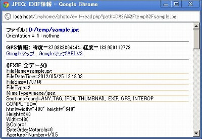
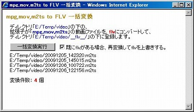
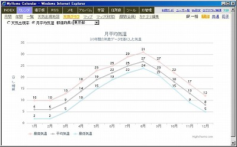
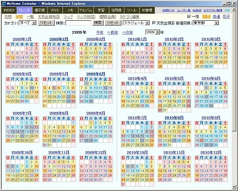
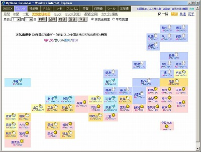
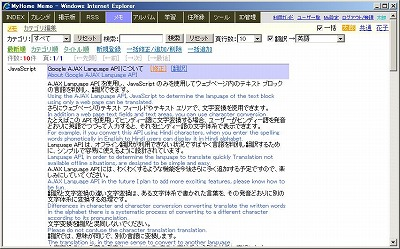

MyHome Portal 変更履歴
以下は、バージョン2.50以前の履歴です。 最新(2.51以降)の履歴に戻る
MyHome Portal Ver.2.50 (2009/12/28)
- 変更点
- アルバム・全画面スライドーショーのフェードインモードを、キーボードで切り替えできるようにしました。[F]キーで切り替えられます。
- 変更モジュール
・photo/slide.php
MyHome Portal Ver.2.49 (2009/12/28)
- 変更点
- アルバム・全画面スライドーショーで、画像をフェードインしながら表示するようにしました。
Chrome、Safariでは、jQueryで実現していますが、IE、FirefoxではjQueryで動作しなかったので、
IEでは、以下を参考にさせていただきました。
※注：Ver.2.53でIE、FirefoxもjQueryで行うよう変更しました。
http://javascript.eweb-design.com/0814_fio.html
Firefoxでは、以下を参考にさせていただきました。
http://javascript123.seesaa.net/article/103705244.html
フェードインさせたくない場合は、実運用定義ファイルでphoto_SLIDE_FADEIN_USEを"NO"にしてください。 - アルバム・スライドモードで、画像部分拡大(ルーペ)機能を追加しました。実画像サイズが表示サイズより小さい場合は、実画像サイズで表示されます。ルーペ機能には、jquery.loupe.jsを使っています。
http://jdbartlett.github.com/loupe/
- 変更モジュール
・photo/index.php, slide.php
・style/original/photo.css - 追加モジュール
・scripts/jquery.loupe.js
MyHome Portal Ver.2.48 (2009/12/25)
- 変更点
- JPEG画像一括縮小付属の「EXIF縦位置画像回転」機能で、左右いずれの回転画像も、無条件に右回転していました。この不具合を修正しました。また、縮小処理を伴わないEXIF縦位置画像回転のみの処理も行えるようにしました。
- アルバムにJPEGのEXIF情報表示機能を追加。スライドショー画像右の「EXIF情報」をクリックしてください。システム管理者用です。
 - ツールに「snowstorm.js」と「Fireworks.js」を使ったおまけを追加。「Fireworks.js」はほとんどそのままです。
http://www.schillmania.com/projects/snowstorm/
http://www.schillmania.com/projects/fireworks/
- 変更モジュール
・photo/index.php, img-resize.php
・style/original/photo.css
・tools/index.php
・tools/snowstorm/一式
・tools/fireworks/一式 - 追加モジュール
・photo/exif-read.php
MyHome Portal Ver.2.47 (2009/12/24)
- 変更点
- アルバムで、画像の表示順序を、ファイル名順と更新日時順が選択できるようにしました。
- アルバムで、表示順序がファイル名順の場合、Windowsエクスプローラと同じくアルファベットの大文字/小文字を区別しないで並び替えるようにしました。
- アルバム・スライドショーで画像の下にファイル更新日時も表示するようにしました。
- アルバムにファイル削除機能を追加しました。システム管理者で全画面モードでのみ使えます。
全画面モードで、[Delete]キーを押すと、表示されている画像ファイルを削除します。削除したファイルは該当フォルダの下に「___trash___」フォルダを作成し、そこに保管します。
この機能を使う場合、実運用定義ファイルで、photo_DELETE_FILE_USEを"YES"にしてください。
define("photo_DELETE_FILE_USE", "YES"); - 変更モジュール
・photo/index.php, slide.php, __define.php, __html-my-header.php
・style/original/photo.css
・__define_common_my_sample.php
MyHome Portal Ver.2.46 (2009/12/22)
- 変更点
- PHPプログラム上のディレクトリの区切り文字をPHP定数「DIRECTORY_SEPARATOR」を使うようにしました。これでUNIX系OSでもファイル関係の機能が利用可能になるかも？
- JPEG画像一括縮小に「EXIF縦位置画像回転」機能を追加しました。EXIF対応デジカメで縦位置した画像を、WindowsエクスプローラやEXIF未対応ソフトでも縦位置表示できるようになります。
ただ、Windowsエクスプローラのサムネイルは縦位置表示にならない場合もあります。
この回転処理はロスレス(無劣化)で行われますが、画像以外の何らかの属性情報が失われる可能性があります。ファイル更新日は保存されます。
この機能を使う場合、実運用定義ファイルでphoto_EXIF_AUTO_ROTATEを"YES"にしてください。
define("photo_EXIF_AUTO_ROTATE", "YES");
- 変更モジュール
・photo/index.php, img-view.php, img-resize.php
・__define_common_my_sample.php
・その他ディレクトリの区切り文字で"¥¥"を使っていたモジュール。
「_myhome_246.zip」には不具合があります。「EXIF縦位置画像回転」機能で、撮影日が失われます。
「_myhome_246-1.zip」または最新バージョンをダウンロードしてください。
MyHome Portal Ver.2.45 (2009/12/21)
- 変更点
- トップINDEXのYahoo検索ができなくなっていた点を修正。Yahoo検索のURLが変更になっていたためです。
前のバージョンで、__define_index_search_my_google.phpまたは__define_index_search_my_yahoo.phpで環境設定されている場合は、 「http://search.yahoo.co.jp/bin/search」の記述を「http://search.yahoo.co.jp/search」に置き換えてください。 - アルバムで縮小画像を作るための、exec()によるIrfanView実行に「/silent」オプションを追加しました。これを付けないと、IrfanViewでエラーが発生するとプロセス「i_view32」が残ったままになってしまいます。
- Windows XPでは、IrfanViewのコマンドライン実行では日本語のファイルパスが使えない可能性があります。そのため、アルバムの縮小画像生成が出来ません。
- 変更モジュール
・__common__/include-common-all.php
・index/__define_index_search.php
・photo/__define.php, __include-common.php, img-view.php, img-resize.php
・__define_common_my_sample.php, __define_index_search_my_google.php, __define_index_search_my_yahoo.php
MyHome Portal Ver.2.44 (2009/12/19)
- 変更点
-
MyHome Portalアルバムでの表示が初めて(表示用縮小画像生成時)で、EXIF情報により縦位置表示される画像の場合、画像の上下が切れて表示されてしまう現象が発生する場合がありますが、ブラウザで再表示(リロード)すれば直ります。
- アルバムのJPEG画像の表示を高速化しました。JPEG画像のサイズが大きい場合、サーバーサイドで縮小画像を生成して表示する方式にしました。生成した縮小画像は、画像フォルダの下に「___small___」フォルダを生成して、その下に保管します。次回表示時点では、その画像を使って表示します。スライドショーの下の小さなサムネイル画像も別途、縮小画像を生成して、フォルダ「___thumb___」の下に保管します。
- 生成する縮小画像の大きさは、実運用定義ファイルで指定できます。縮小画像のサイズ指定：1200で、画像サイズ：3648×2736＆ファイルサイズ：約6MBのファイルが、画像サイズ：1200×900＆ファイルサイズ：約400KB程度になります。今までデジカメの高解像度の写真をアルバムで表示する場合、非常に重たく実用的ではありませんでしたが、かなりスムーズに動作するようになりました。
- JPEG画像の縮小には、「IrfanView」と「IrFanView Graphic Viewer PlugIns(拡張プラグイン全DLL収録版)」を使っています。
http://www.irfanview.com/
http://www.forest.impress.co.jp/lib/pic/piccam/picviewer/irfanview.html
MyHome Portalインストールガイドの「JPEG画像の縮小機能設定（IrfanViewインストール） 」に従ってインストールしてください。 - EXIFに縦位置情報を持っている場合は、IrfanViewによる縮小画像は縦位置で生成されるため、MyHome Portalアルバムでは縦位置で表示されます。
- 実運用定義ファイルの追記。既に前のバージョンで実運用している場合でJPEG画像の縮小機能を使う場合は、実運用定義ファイルに以下の行を追加してください。
define("photo_RESIZE_SIZE_SMALL", 1200); //アルバム 縮小画像のサイズ define("photo_RESIZE_SIZE_THUMB", 160); //アルバム スライド下のサムネイルサイズ define("photo_RESIZE_DIR_SMALL", "/___small___/"); define("photo_RESIZE_DIR_THUMB", "/___thumb___/"); define("photo_JPEG_RESIZE", "YES"); // JPEG画像の縮小機能を使う場合:"YES" - JPEG画像の回転機能は、廃止したままとします。IrfanViewを使えば、ほぼ期待通りのJPEG画像回転が出来ることがわかりましたが、EXIFにより自動的に縦位置表示されてしまう関係で、回転機能を組み合わせると紛らわしいことになるため、廃止とします。
- /___small___/、/___thumb___/、/___flv___/フォルダはアルバムディレクトリ表示から外すようにしました。
- JPEG画像一括縮小ページを追加しました。フォルダ単位でアルバム表示用縮小画像とスライド・サムネイル画像を一括生成します。システム管理者用です。
- 変更モジュール
・photo/index.php, slide.php, img-view.php
・__define_abook_pdf_my_sample.php - 追加モジュール
・photo/img-resize.php
MyHome Portal Ver.2.43 (2009/12/19)
- 変更点
- Ver.2.42で追加したJPEG画像回転機能に問題があるため、画像回転機能を除いたバージョンです。
MyHome Portal Ver.2.42 (2009/12/17)
- 変更点
-
画像の回転機能に問題があるため、2.42のリリースを停止します。画像の回転機能を使わないでください。
- システム内の動画プレビューという表現を動画再生という表現に変えました。
- アルバム・スライドショーで、mpg,mov,m2tsの動画再生ができるようにしました。
ffmpegを使って、FLVに変換して表示します。変換したFLVファイルは、サブディレクトリ「/___flv___/」の下に格納します。 - アルバムに、mpg,mov,m2ts動画のFLV一括変換ツールを追加しました。システム管理者のみ、利用できます。
 - アルバムでJPEG画像の回転ができるようにしました。右90度、左90度の回転ができます。システム管理者のみ使用できます。全画面モードでもキー操作で可能です。キー「P」で右回転、キー「O」で左回転します。
- 実運用定義ファイルの修正。既に前のバージョンで実運用している場合は、実運用定義ファイルの以下の部分を修正してください。ただし、mpg,mov,m2tsの動画再生をしない場合は、photo_VIDEO_PREVIEW_EXTから外してください。
define("photo_VIDEO_PREVIEW_EXT", "flv,mp4,mp3,wmv,mpg,mov,m2ts"); - 実運用定義ファイルの追記。既に前のバージョンで実運用している場合は、実運用定義ファイルに以下の行を追加してください。ffmpegによるFLV変換では画質劣化します。以下のFFMPEG_CONVERT_OPTIONを変えることで、改善できるかもしれません。
define("VIDEO_PREVIEW_CONVERT", "mpg,mov,m2ts"); define("VIDEO_PREVIEW_CONVERT_FLV_DIR", "/___flv___/"); define("FFMPEG_CONVERT_OPTION_MPG", "-vcodec flv"); define("FFMPEG_CONVERT_OPTION_MOV", "-f flv -vcodec flv -r 25 -b 900 -s qvga -acodec libmp3lame -ar 44100 -ab 64k"); define("FFMPEG_CONVERT_OPTION_M2TS", "-ar 44100 -b 700k"); - ツールに、ページ内に雪を降らせられるjQueryプラグイン「jSnow」を使ったページを追加。降らせる文字や色などを変えられるページも作りました。
http://phpspot.org/blog/archives/2009/12/jqueryjsnow.html
http://www.dummwiam.com/jSnow

- jquery.jsのバージョンを1.3.2にしました。 ただ、住所録一覧の都道府県選択のプルダウンで使用しているCustom Select「jquery.cs.js」が1.3.2では正常表示されないので、1.2.6を使用するようにしています。
- _myhome/.htaccessに、「Options -Indexes」(ディレクトリのファイル一覧表示禁止)を追記しました。ディレクトリ_myhomeにはindex.phpが在るので、この記述が無くても実際は問題ないのですが、実運用環境設定ディレクトリ「/htdocs/_myhome_myset/」には必要ですので、「/htdocs/_myhome_myset/の下の.htaccessには、「Options -Indexes」を必ず追記してください。また、「/htdocs/_attach/」にも、.htaccessをコピーしてください。
- 変更モジュール
・__common__/__define_common.php
・photo/index.php, slide.php, video-view.php
・tools/index.php
・abook/__html-my-header.php
・scripts/jquery.js
・__define_common_my_sample.php - 追加モジュール
・photo/video-convert.php, img-rotate.php
・tools/jSnow/一式
・tools/icon/snow.gif
画像回転における具体的な問題点は、以下のようなものです。
→ 関連ブログ記事：JPEG画像のロスレス(無劣化)回転
画像データの形式について理解できていないので、素人的な記述になります。
例として、Panasonic LUMIXで縦位置で撮影した画像は、Windowsエクスプローラでは縦位置表示されませんが、ソフトによっては、例えばFastStone Image Viewerでは撮影時のまま縦位置で表示されます。
この画像をMyHome Portalで回転すると、MyHome Portal上およびWindowsエクスプローラ上では回転して縦位置表示されます。しかし、FastStone Image Viewerでは元々撮影時を正しく反映して縦位置表示されていたものが回転して横位置で表示されてしまいます。
この画像をIrfanView(コマンドラインベース)等でリサイズすると、横位置画像になってしまいます。つまり、WindowsエクスプローラやMyHome Portalでは縦位置表示されていたものが、リサイズすると横位置画像になってしまうということです。
この問題により、画像回転機能は廃止しました。
MyHome Portal Ver.2.41 (2009/12/13)
- 変更点
- 住所録の「葉書宛名書き」で、印刷位置の微調整をしました。
- 住所録の「葉書宛名書き」で、差出人の連名を指定できるようにしました。
既に前のバージョンで実運用している場合は、住所録定義ファイル「__define_abook_pdf_my.php」の中身を「__define_abook_pdf_my_sample.php」で差し替えてください。 - 変更モジュール
・abook/__define-pdf.php, do-proc.php, list-my-template.php
・__define_abook_pdf_my_sample.php
MyHome Portal Ver.2.40 (2009/12/12)
- 変更点
- 住所録の一覧で、「電話・EMail表示なし」を選択できるようにしました。住所が見やすくなります。
- 変更モジュール
・abook/list.php, list-my-template.php, list-my-add-filter.php
・style/original/abook.css
MyHome Portal Ver.2.39 (2009/12/12)
- 変更点
- アルバム・スライドショーで、オートプレイの間隔、動画時間分割の分割数をcookie保存するようにしました。
- アルバム・スライドショー、掲示板、メモで、MP4も動画プレビューできるようにしました。
- Adobe Flash Playerが最新のバージョンでないと、MP4プレビューができない可能性があります。最新のバージョンにしてください。
- 既に前のバージョンで実運用している場合は、実運用定義ファイルの以下の部分を修正してください。
define("IS_VIDEO_EXT", "avi,flv,mpg,mov,swf,wmv,m2ts,mp4"); define("IS_VIDEO_MIME","video/x-msvideo,video/x-flv,video/mpeg,video/quicktime,application/x-shockwave-flash,video/x-ms-wmv,video/avc,video/mp4"); define("GET_URL_FILE_TYPE_SELECTS_tools", "jpeg,jpg,gif,png,wmv,flv,avi,mpg,mp4,mov,swf,zip,lzh"); - 既に前のバージョンで実運用している場合は、実運用定義ファイルに以下の1行を追加してください。
define("VIDEO_PREVIEW_WMV", "wmv"); - 変更モジュール
・__define_common_my_sample.php
・__common__/__define_common.php, include-common-all.php, include-common-html.php
・photo/index.php, slide.php, video-view.php
・scripts/JWPlayer/movie_preview.js
MyHome Portal Ver.2.38 (2009/12/10)
- 変更点
- アルバム・スライドショー、掲示板、メモのFLV,WMV動画プレビューを自動再生スタートにしました。
- アルバム・スライドショーの全画面モードでも、FLV,WMV動画プレビューができるようにしました。
- アルバム・サムネイルとスライドショーの切り替え時に、先頭ページに戻らずに、現在の画像が表示できる範囲でページ遷移するようにしました。
- アルバム・スライドショー下部の10個のサムネイルのうち、現在メインで表示中のものにブルーの枠を付けました。
- アルバム・スライドショーのFLV,WMV動画プレビューの画像枠の縦横比率を3:4にしました。
- アルバム・サムネイルで現在のページ数以外に枚数表示もするようにしました。
- 変更モジュール
・photo/__define.php, index.php, slide.php
・__common__/include-common-html.php
・scripts/JWPlayer/movie_preview.js
・style/original/photo.css
MyHome Portal Ver.2.37 (2009/12/09)
- 変更点
- アルバム・スライドショーのFLVプレビューが、ファイル名やパス名に日本語が含まれているとエラーになってプレビューできなかった問題を修正しました。(掲示板、メモに関しては、アップロードファイル名に日本語が含まれているとFLVプレビューできません。)
- アルバム・スライドショーの下に表示される10枚のサムネイルを、残りが10枚以下の場合は最後から10枚を表示するようにしました。
- FLVプレビュー用のJW FLV Playerをバージョン5にしました。
- 変更モジュール
・photo/index.php, video-view.php
・scripts/JWPlayer/movie_preview.js
・photo/player-viral.swf, yt.swf
・bbs/player-viral.swf, yt.swf
・memo/player-viral.swf, yt.swf
MyHome Portal Ver.2.36 (2009/12/08)
- 変更点
- XAMPP1.7.2以降では「short_open_tag」のデフォルト値の関係で、YouTube等の外部コンテンツを組み込む場合、組み込み用ファイルを置くディレクトリにも、「php_flag short_open_tag On」を記述した「.htaccess」が必要です。 インストール手順の「メインコンテンツの追加・削除」に「.htaccess」に関する記述を追加しました。
- 天気出現率のデータに1件間違ったデータがあることが判明。
沖縄県(c_kenid=47)の「2000/10/19」の日付けが「2000/0/19」になっていました。
既に前のバージョンで実運用している場合は、以下の手順で、テーブル「m_weather」を修正してください。MySQL管理者ユーザーrootのパスワードを「kanri789」として説明します。
■ サンプルデータベースの例 (Windowsの場合、コマンドプロンプトから実行。)
mysql -u root -pkanri789 use _db_calendar; update m_weather set c_date = '2000/10/19' where c_date = '2000/0/19'; exit;
■ 実運用データベースの例 (Windowsの場合、コマンドプロンプトから実行。)
mysql -u root -pkanri789 use _mydb_calendar; update m_weather set c_date = '2000/10/19' where c_date = '2000/0/19'; exit;
- カレンダーに天気グラフを追加しました。都道府県別の月平均天気出現率と月平均気温をグラフ表示します。
グラフ生成には、Highchartsを使っています。
http://www.highcharts.com/
 - 変更モジュール
・__common__/include-common-all.php, include-common-html.php, include-common-mp-list.php
・calendar/_contents-header.php, _my_calendar.php
・style/original/weather.css
・実運用サンプル/天気出現率.csv
・z_db_backup/_db_calendar.bk.txt - 追加モジュール
・calendar/weather-graph.php
・scripts/excanvas.compiled.js
・scripts/Highcharts/一式
MyHome Portal Ver.2.35 (2009/12/07)
- 変更点
- XAMPP 1.7.2で「short_open_tag」のデフォルト値がOffになったことへの対策として、_myhome直下に「.htaccess」を置き、「php_flag short_open_tag On」を記述しました。
【short_open_tagについて】
short_open_tagがonの場合、PHPの記述を"<?php"の代わりに"<?"で囲む方法が許されるが、offでは許されない。
"<?php"が"<?"になっている箇所全てを直せば良いのですが、値を直接挿入する箇所では全て"<?="の方法で記述しており、これを全て修正するのはリスクがありそうなので、「.htaccess」による「php_flag short_open_tag On」で回避することにしました。 - アルバムスライドショーで、動画の時間分割サムネイル表示時にファイル名と動画再生時間を表示するようにしました。
- アルバムで、上位デイレクトリの表示を非表示にも出来るようにしました。
- 「INDEX」のリスト形式表示時に、Webサイトのキャプチャ画像を非表示にも出来るようにしました。
- 変更モジュール
・index/list.php, list-my-template.php
・photo/index.php
・style/original/photo.css - 追加モジュール
・.htaccesss
MyHome Portal Ver.2.34 (2009/12/04)
- 変更点
- アルバムスライドショーの画像サイズ変更をサーバーサイドでなく、JavaScriptで行うようにしました。これにより、画像サイズ変更が、サーバーからの画像データの再取得なしに、スムーズに行えます。
- アルバムで、表示しているディレクトリの上位デイレクトリも表示するようにしました。これにより、同じ階層のディレクトリの写真/画像を順番に閲覧しやすくなりました。
- 変更モジュール
・__common__/include-common-html.php
・photo/index.php
・scripts/JWPlayer/movie_preview.js
・style/original/photo.css
MyHome Portal Ver.2.33 (2009/12/02)
- 変更点
- システムをWindows以外のOS上に載せやすいように、ファイルシステムの文字コードを定義ファイルで変更できるようにしました。
define("_SYSTEM_FILE_ENCODING", "SJIS-win"); - アルバムで、動画を時間分割して、サムネイル表示できる機能を追加しました。分割数やサイズも選択できます。

- 変更モジュール
・__common__/__define_common.php, include-common-all.php
・calendar/_my_calendar.php
・photo/多数
・tools/多数
・setup-sample.php, __define_common_my_sample.php
MyHome Portal Ver.2.32 (2009/12/01)
- 変更点
- 住所録の「電子メール宛名」機能で、mailto:の複数メールアドレスの結合文字として、Outlook用の";"を定義ファイルで設定できるようにしました。
define("MAILTO_CONCATENATE_CHR", ","); - 掲示板、メモ、アルバムでWMVをFLV同様にプレビューできるようにしました。
WMVプレビューには、JW WMV Playerを使用。
http://www.longtailvideo.com/players/jw-wmv-player/ - FLVプレビュー用のJW FLV Playerをバージョン4.6にしました。
- アルバム、
掲示板、メモ、ツールの(簡易)ファイルマネージャー等でファイル名にシングルクォート(')が含まれている場合の不具合を修正。
掲示板、メモ等でアップロードファイル名にシングルクォート(')が含まれている場合は、ファイル名が化けるなどの不具合が発生します。 - カレンダーで、平均気温の他に、最高気温、最低気温の表示もできるようにしました。
- 気温の色分け区分を増やしました。
- 変更モジュール
・__common__/__define_common.php, include-common-html.php, include-common-all.php
・abook/do-proc.php
・bbs/view.php, __define.php, player.swf, yt.swf
・memo/list-my-template.php, __define.php, player.swf, yt.swf
・calendar/__define.php, __include-weather.php, _my_calendar.php
・calendar/month.php, year.php, weather-map.php
・photo/__define.php, index.php, slide.php, img-view.php
・photo/video-jpeg.php, video-view.php, jigsaw.php
・tools/多数
・scripts/JWPlayer/swfobject.js
・style/original/weather.css, map-japan-weather.css
・__define_common_my_sample.php - 追加モジュール
・bbs/wmvplayer.xaml
・memo/wmvplayer.xaml
・photo/wmvplayer.xaml
・scripts/JWPlayer/wmvplayer.js, silverlight.js
MyHome Portal Ver.2.31 (2009/11/27)
- 変更点
- カレンダーの年間カレンダーを1024×768のディスプレイで全体が表示できるように微調整。
- カレンダーに全国の都道府県別平均気温表示機能を追加。天気出現率と同じく、月間、年間カレンダーでの表示の他、日本地図での日付別の平均気温表示もできます。

- 変更モジュール
・calendar/__define.php, _my_calendar.php,__include-weather.php
・calendar/year.php, month.php, weather-map.php
・style/original/calendar.css, weather.css, map-japan-weather.css
・__define_common_my_sample.php
MyHome Portal Ver.2.30 (2009/11/24)
- 変更点
- カレンダーの天気出現率地図を、1024×768のディスプレイで地図全体が表示できるように微調整。
- 変更モジュール
・calendar/weather-map.php
・style/original/map-japan-weather.css
MyHome Portal Ver.2.29 (2009/11/21)
- 変更点
- サンプルDBセットアップ「setup-sample.php」の修正。
mysqli_multi_query()では、長いSQL文を実行するとエラーになるようなので、exec()を使用する方法に変更。 - ツールに「HTML テキスト抽出 複数一括」を追加。
複数のURLから一括してテキスト抽出します。
テーブルデータ出力時のセパレータ（区切り文字）を指定できます。デフォルトはスペースです。カンマ(,)にすることで、CSVとしての利用が容易になります。
テーブルデータ出力時に、行単位に先頭に文字を付加することもできます。CSV利用時に、共通のキーを付加したい場合に使えます。
テーブルのみに限定して抽出もできます。（ただし、階層構造には未対応です。）
テーブルサイズを指定サイズ以上のものに限定することもできます。
- カレンダーに、天気出現率機能追加。
カレンダーで、天気出現率を表示します。天気出現率とは、過去30年間の大気現象や日降水量、日平均雲量から割り出したものです。
月間、年間カレンダーで、各日の都道府県別の天気出現率を基にした出現率の高い天気を表示します。主に都道府県庁所在地の天気出現率を基にしています。北海道は主な支庁の都市を表示します。佐渡、伊豆大島、輪島の天気出現率も表示します。
日付別の天気出現率の日本地図表示もできます。指定日の日本全体の天気の傾向が読み取れます。
天気出現率は、「みんなの知識【ちょっと便利帳】」のものを使わせていただきました。
http://www.benricho.org/weather_ratio/
天気アイコンは、「素材のプチッチ」のものを使わせていただきました。
http://putiya.com/4risuto2.html -
既に前のバージョンで実運用の場合は、以下の手順で、テーブル「m_weather」と「r_kenmei」を追加してください。MySQL管理者ユーザーrootのパスワードを「kanri789」、インストールドライブを「D:」として説明します。
【サンプルDBの場合】
- コマンド・プロンプトで次を実行します。
D: cd "D:\xampp\htdocs\_myhome\z_db_backup" mysql -u root -pkanri789 _db_calendar < _db_calendar_add_m_weather.txt
- 次に、「MySQL管理ツール」で、「実運用サンプル/天気出現率.csv」を、「_db_calendar」のテーブル「m_weather」にインポートしてください。
- 同じく、「実運用サンプル/都道府県_for_カレンダー.csv」を、「_db_calendar」のテーブル「r_kenmei」にインポートしてください。
- コマンド・プロンプトで次を実行します。
D: cd "D:\xampp\htdocs\_myhome\z_db_backup" mysql -u root -pkanri789 _db_calendar < create_view_db_calendar.txt
- コマンド・プロンプトで次を実行します。
D: cd "D:\xampp\htdocs\_myhome\z_db_backup" mysql -u root -pkanri789 _mydb_calendar < _db_calendar_add_m_weather.txt
- 次に、「MySQL管理ツール」で、「実運用サンプル/天気出現率.csv」を、「_mydb_calendar」のテーブル「m_weather」にインポートしてください。
- 同じく、「実運用サンプル/都道府県_for_カレンダー.csv」を、「_mydb_calendar」のテーブル「r_kenmei」にインポートしてください。
- コマンド・プロンプトで次を実行します。
D: cd "D:\xampp\htdocs\_myhome\z_db_backup" mysql -u root -pkanri789 _mydb_calendar < create_view_mydb_calendar.txt


 - コマンド・プロンプトで次を実行します。
- 変更モジュール
・__common__/include-common-all.php
・abook/map-japan.php
・calendar/多数
・db_tool/csv-import.php, mysql-table-list.php
・tools/index.php, html-text-mail.php, colorpicker.php
・tools/refresh_web/colorpicker/ColorPicker.js
・setup-sample.php
・style/original/calendar.css, map-japan.css
・z_db_backup/create_view_db_calendar.txt, create_view_mydb_calendar.txt, _db_calendar.bk.txt - 追加モジュール
・calendar/weather-map.php, __html-my-header-weather-map.php, __include-weather.php
・tools/html-text-multi.php
・style/original/weather.css
・icon/weather/天気アイコン
・z_db_backup/_db_calendar_add_m_weather.txt
・実運用サンプル/天気出現率.csv, 都道府県_for_カレンダー.csv
MyHome Portal Ver.2.28 (2009/11/10)
- 変更点
- テキストをHTML表示する時に、スペース(" ")を、" "に置き換えていたのを止めました。英文表示で自動改行がされなくなるため。
- 「メモ」に翻訳機能追加。メモ本文を各国語に翻訳できます。一覧表示全体または個々のメモを翻訳できます。文単位で翻訳します。
原文の言語は自動判別しますので、日本語から英語や各国語、または英語など各国語から日本語への翻訳ができます。
OSとブラウザの環境によっては、中国語や韓国語などは、正しい文字が表示されず文字化けする可能性があります。
翻訳には、Google AJAX Language APIを使用しています。
＜Google AJAX Language API＞
http://code.google.com/intl/ja/apis/ajaxlanguage/documentation/
 - 変更モジュール
・__common__/include-common-all.php, include-common-html.php
・memo/list.php, list-my-template.php
・style/original/memo.css - 追加モジュール
・memo/translate-google.php, __html-my-header-translate.php
MyHome Portal Ver.2.27 (2009/11/08)
- 変更点
- 月間カレンダーの右に表示される年間カレンダーにマウスを載せるとカレンダーが消えてしまう不具合を修正。(CSSのfloat:left;を除去)
- ツール「(簡易) 預貯金管理」の名義フィルタに削除したデータの名義が残ってしまう不具合があったのを修正。ビュー「v_keiyakusha」の定義に不備があったため。
-
既に前のバージョンで実運用の場合は、以下の手順で、_db_kakeiboまたは_mydb_kakeiboのビューを再定義してください。MySQL管理者ユーザーrootのパスワードを「kanri789」、インストールドライブを「D:」として説明します。
【サンプルDBの場合】
D: cd "D:\xampp\htdocs\_myhome\z_db_backup" mysql -u root -pkanri789 _db_kakeibo < create_view_db_kakeibo.txt
【実運用DBの場合】
D: cd "D:\xampp\htdocs\_myhome\z_db_backup" mysql -u root -pkanri789 _mydb_kakeibo < create_view_mydb_kakeibo.txt
- 変更モジュール
・style/original/calendar.css
・z_db_backup/create_view_db_kakeibo.txt, create_view_mydb_kakeibo.txt, _db_kakeibo.bk.txt
MyHome Portal Ver.2.26 (2009/11/07)
- 変更点
- ページ全体のbodyの横幅の定義をCSSファイルでなく、実運用定義ファイルで指定できるように変更。
実運用定義ファイルのPAGE_BODY_STYLEで定義してください。max-widthを外せば100%指定になります。
define("PAGE_BODY_STYLE", "max-width: 980px;"); - 変更モジュール
・__common__/__define_common.php, include-common-html.php
・abook/map-japan.php
・calendar/maps-alone.php
・style/original/common.css, rss.css, calendar.css
・__define_common_my_sample.phpp